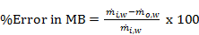
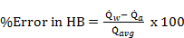
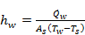
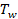
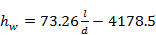
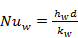

International Journal of Mechanical Engineering and Mechatronics (IJMEM)
ISSN: 1929-2724

Volume 2 - Year 2014 - Pages 33-42
DOI: 10.11159/ijmem.2014.004
Effect of Channel Size on Heat Transfer and Pressure Drop in Thin Slabs Minichannel Heat Exchanger
Mohammed Ismail, Shahram Fotowat, Amir Fartaj
University of Windsor 401 Sunset Avenue, Windsor, Canada
ismailf@uwindsor.ca; fotowat@uwindsor.ca; fartaj@uwindsor.ca
Abstract - The effect of circular channel diameter on convective heat transfer and pressure drop behaviors in thin slabs minichannel heat exchanger is studied using a three-dimensional computational fluid dynamics (CFD) modeling. De-ionized water and air are considered as working fluids and aluminum as slab material for the particular interest of the current study. In this study, four different channel diameters of 0.25, 0.5, 0.75, and 1 mm are considered. Investigation is evaluated for the liquid side Reynolds number of 100, 400, 700, 1000, and 1300. The simulations are performed with parallel processing of 8 CPUs using a finite volume method based commercial CFD code. Three-dimensional double precision pressure-based absolute velocity formulation with parallel processing is employed. The constant temperature of 76° for water inlet and 14° for air inlet are considered for all cases in this study. The effects of channel diameter over liquid-side temperature drop, heat transfer coefficient, pressure drop, and Nusselt number are analyzed and reported in this paper. Results show that the changes in the pressure drop decreases with increasing channel diameter and decreasing Reynolds number; however, for higher diameter and lower Reynolds number, it is found to be negligible. For a constant Reynolds number, the heat transfer coefficient of water increases and the Nusselt number decreases with the increase of l/d. However, the Nusselt number of water is observed to be higher than that of the theoretical prediction because the flow in the current study is neither hydrodynamically nor thermally fully developed before the entrance and through most of the channel length.
Keywords: Channel diameter, simulation, heat transfer, thin slab, minichannel heat exchanger.
© Copyright 2015 Authors This is an Open Access article published under the Creative Commons Attribution License terms. Unrestricted use, distribution, and reproduction in any medium are permitted, provided the original work is properly cited.
Date Received: 2013-09-20
Date Accepted: 2014-02-23
Date Published: 2014-07-07
Nomenclature
 : Heat transfer surface area,
: Heat transfer surface area, 
 : Constant
: Constant : Channel inside diameter,
: Channel inside diameter, 
 : Hydraulic diameter,
: Hydraulic diameter,  : Constant
: Constant : Heat transfer coefficient,
: Heat transfer coefficient, 
 : Heat
balance
: Heat
balance : Thermal conductivity,
: Thermal conductivity, 
 : Channel
length,
: Channel
length, - l: Slab
length,
 : Mass
balance
: Mass
balance : Minichannel
heat exchanger
: Minichannel
heat exchanger : Mass flow rate,
: Mass flow rate, 
 : Nusselt number
: Nusselt number : Pressure,
: Pressure, 
 : Heat
transfer rate,
: Heat
transfer rate, 
 : Reynolds number
: Reynolds number : Temperature,
: Temperature, 
 : Velocity,
: Velocity,

Greek Symbols
 : Difference
: Difference : Rate of turbulence kinetic energy dissipation,
: Rate of turbulence kinetic energy dissipation, 
 : Turbulence kinetic energy, m² /s²
: Turbulence kinetic energy, m² /s² : Dynamic
viscosity,
: Dynamic
viscosity, 
 : Density, kg/m³
: Density, kg/m³
Subscripts
 : Airside
: Airside  : Average
: Average  : Effective
: Effective : Inlet
: Inlet : Components
in x, y, and z directions respectively
: Components
in x, y, and z directions respectively : Outlet
: Outlet : Surface
: Surface : Turbulent
: Turbulent- : Deionized water
1. Introduction
Several studies dealing with the single-phase forced convection heat transfer in micro devices have been printed in previous years, owing to the rapid development of micro-electromechanical devices during the last decade. This growth has great influence on micro scale devices, including microelectronic cooling systems and micro heat exchangers. Single-phase heat transfer coefficients in six rectangular channels with a hydraulic diameter () of 0.31 to 0.75 for water and methanol were reported by Wang and Peng [1]. Their Nusselt numbers () were only 35% of that predicted by Dittus-Boetler [2] equation. However, Webb and Zhang [3] discussed the capability of commonly accepted correlations to predict single-phase and two-phase heat transfer and friction in channels with small hydraulic diameters between 0.1 mm and 2.0 mm. They found that their experimental results were adequately predicted by the established correlations for single-phase flow in multiple tubes with .
The flow and heat transfer characteristics for the run of nitrogen gas in heat exchangers were measured by Wu and Little [4]. They found that for laminar flow with a Reynolds number () of less than 600, was lower than those predicted by traditional correlations, whereas for , was higher than the standard values. Several effects that are neglected when considering macro scale flow were identified by Papautsky et al. [5]. For example, micro scale phenomena may include two- or three-dimensional transport effects, and the temperature dependent variations of the transport fluid properties along a microchannel may invalidate the often used assumption of constant properties, so that to provide conclusive evidence of micro scale effects, amended measurement accuracies are required.
The liquid flow friction factor and heat transfer coefficient in circular and rectangular mini-channels with hydraulic diameters of 0.77 to 2.01 were quantified by Agostini et al. [6]. They found good agreement between their experimental results in the turbulent regime and the Gnielinski [7] correlation. Conversely, in the laminar regime, no precise prediction was found, and most of the heat transfer test results were expressively divergent from those predicted by the traditional forced convection heat transfer correlations. However, three main causes were explained for the differences between the experimental results obtained in minichannel heat exchanger compared to macro-tubes: uncertainties on the channel dimensions, inlet and outlet singular pressure losses, and longitudinal heat conduction. Good agreement was found with standard correlations and theories, while these elements are taken into account.
Experimental and numerical studies were conducted by Li et al. [8] to characterise the flow and heat transfer behaviors of liquid laminar flow in microtubes. The smooth fused silica and rough stainless steel microtubes were used with hydraulic diameters of 50–100 and 373–1570, respectively. The experiment was conducted with deionized water at the Reynolds number from 20 to 2400. They established that the experimental results of local Nusselt number distribution along the axial direction of the stainless steel tubes did not comply with the conventional results when Reynolds number was low and the relative thickness of the tube wall was high. The numerical study revealed that the large ratio of wall thickness over tube diameter in low Reynolds number region causes significant axial heat conduction in the tube wall, leading to a non-linear distribution of the fluid temperature along the axial direction. The axial heat conduction effect was gradually weakened with the increase of Reynolds number and the decrease of the relative tube wall thickness.
Harirchian
and Garimella [9] experimentally investigated the effects of channel size, heat
flux, and mass flux (225-1420 ) on flow boiling
regimes in mini and micro-channels flow boiling regimes using high speed
photography. Seven dissimilar silicon test pieces with a depth of 400 with parallel channels
widths from100 to 5850 are used. The picturing
and the heat transfer data show that nucleate boiling is dominant, flow regimes
are similar in the channels of width 400 and large and differ
from 100-250 wide channels, over a
wide range of heat flux. It is also stated that with increase of channel width,
bubbly flow substitutes slug flow and intermittent churn/wispy-annular flow
substitutes intermittent churn/annular flow. It is established that for channels
width of 400 and larger, for the
range of heat fluxes in which nucleate boiling occurs on the channel walls, the
heat transfer coefficient is independent of mass flux regardless of the flow
pattern.
The various mechanisms for the departure of flow and heat transfer correlations for flow in microchannels from the standard ones were categorized into two groups by Guo and Li [10]. First, if the characteristic length of the flow and the molecular mean free path are on the same order of the magnitude, the Navier-Stokes equations and the Fourier heat conduction equation failure, and accordingly, the flow and heat transfer behaviours change significantly. This is the so-called rarefaction effect which can be shown by the Knudsen number, expressed by the ratio of the molecular mean free path and the characteristic length of the flow. Secondly, the size effect on the flow and heat transfer correlations is attributed to the disparity of the governing factors in the flow and heat transfer as the scale decreases even if the continuum assumption is still applicable. For example, forces employed on the fluid that affect the flow and heat transfer whose result on the convection changes at different scales, and also axial heat conduction in the tube wall, which are usually neglected for normal-sized devices, may become significant on a micro scale. Consequently, micro scale flow and heat transfer correlations vary from those of normal-sized devices.
The experiment of water flow in circular microtubes of fused silica and stainless steel with the hydraulic diameter of 50 to 254 was executed by Mala and Li [11]. The mean surface roughness of the tubes was ±1.75 , and the relative roughness of the tubes with and was from 1.36% to 1.70% respectively. They noted that for low , there is a nonlinear trend between pressure drop and flow rate, and the friction factors were steadily higher than those predicted by standard correlations. The authors predicted the transition from laminar to turbulent flow at , and the fully developed turbulent flow at due to the effect of the surface roughness of the microtubes. Lelea et al. [12] experimentally and numerically studied developing and laminar flow regime for distilled water as the working fluid and stainless steel as the tube material with Reynolds number range up to 800 in microtubes with diameter of 0.1, 0.3, and 0.5 . They designed the experimental setup such a way to facilitate the study of friction factor and developing heat transfer. The experimental results have been compared both with numerical and theoretical predictions from literature for conventional tubes. It is stated that the conventional theories are valid for water flow through microtubes obtained by numerical modeling of their experiment.
The effects of diameter on two phase pressure drop in narrow circular tubes using air and water is investigated by Venkatesan et al. [13]. They employed the inner diameters of 0.6, 1.2, 1.7, 2.6, and 3.4 and the superficial velocity of 0.01–50 and 0.01–3 for the gas and liquid respectively. Also a high-speed CMOS camera used to visualize the two phase flow. A correlation for predicting Chisholm parameter in slug annular flow pattern included surface-tension effect, mass flux effect and superficial velocities applicable for mini tubes is suggested in two-phase flow depending on the analysis of experimental frictional pressure drop data.
Minichannel flow passages of compact evaporators for two phase flow pattern, pressure drop and heat transfer was studied by Kandlikar [14]. He explored an inclusive literature review in small-diameter passages on evaporation together with some results obtained by the author for water evaporating in 1 hydraulic diameter multichannel passages. It is found that heat transfer rate in the minichannels may be anticipated using the flow boiling correlations established for large-diameter tubes, nevertheless in multichannel evaporators, it is different from that in single-channel evaporators under the same set of operating conditions. It is also established that the length-to-diameter ratio for evaporators design in small-diameter channels is influenced by the heat transfer and pressure drop characteristics.
2. Numerical Methodology
In this section, the simulation method and model validation are described.
2.1. Simulation Method
In the current field of study, numerical modeling is performed in a multiport serpentine slab minichannel heat exchanger (). A photograph of the , the geometry of the slab accompanied by channels, and computational domain of the particular interest of current research is shown in Figures 1(a)–1(d).
Specifications of the domain extents and thin slabs minichannel heat exchanger are shown in Table 1 as follows:
Table 1. Specifications of the domain extents and channel slabs
|
Particulars |
Specifications |
|||
|
Material of the MICHX |
Aluminium alloy |
|||
|
Domain |
610mm x 305mm x 305mm |
|||
|
No. of slabs |
2 |
|||
|
No. of fins |
8 per 25.4 mm |
|||
|
Fin thickness |
0.1mm |
|||
|
Inner diameter of inlet and outlet manifold |
4.5mm |
|||
|
No. of channels inside the slab |
68 |
|||
|
Thickness of channel wall |
0.5mm |
|||
|
Channel to channel distance |
0.4626mm |
|||
|
Diameter of each channel, d |
1mm |
0.75mm |
0.5mm |
0.25mm |
|
Slab length, L |
100mm |
90mm |
66mm |
48mm |
Gambit, a code of geometry modeling, is used as a pre-processing tool to create the geometry and generate the required meshes for numerical simulation. Due to the complexity of the geometry, the whole computational domain is divided into several sub-domains, and an unstructured scheme is used to generate tetrahedral elements throughout the thermal and flow fields.
Hot de-ionized water is used as liquid-side working fluid; air flow is considered to cool the hot liquid in an across-flow orientation. ANSYS FLUENT, a widely used CFD code of finite-volume method, is used to perform the numerical simulation. A 3-dimensional, double precision, pressure-based, absolute velocity formulation with parallel processing of 8 CPUs having 64 GB of RAM is employed to perform the simulation. A standard k-ε with standard wall function turbulence model is used to solve the continuity, momentum, and energy equations to model the convective heat transfer and fluid flow process. Mass flow rates and temperature are specified for fluid inlet, pressure outlet is specified for outlet, and heat flux is specified for the adiabatic walls including inlet and outlet manifolds and serpentine of the minichannel heat exchanger in the computational set up.
In order to model the convective heat transfer process in the thin slabs minichannel heat exchanger, working fluid and flow are assumed to be steady, incompressible, and 3-dimensional. Based on these assumptions, the following simplified governing equations [15] are used to model the convective heat transfer process
|
Continuity: |
(1) |
|
Momentum: |
(2) |
|
Energy: |
(3) |
|
Turbulent Kinetic Energy, k: |
(4) |
|
Turbulent
Energy Dissipation,: |
(5) |
Mass flow rates and temperature were specified for inlet working liquids, as well as inlet air. For both outlet working liquids and air, outflow boundary condition was specified. Zero heat flux is specified for test chamber and MICHX slab walls, as well as outer and inner surface at the serpentine bend. All walls are considered as stationary with no-slip conditions.
The flow of De-ionized water in the channels is considered both laminar and turbulent; whereas, the flow of air all over the MICHX test specimen is taken as turbulent only. A standard k -ε model is used to solve the turbulent flow. Initialization was computed from all-zones with a zero velocity field and run with second order upwind discretization scheme. The convergence criterion in each control volume for the flow and energy residuals are considered to be <1e-06 and <1e-10 respectively.
2. 2. Model Validation
In order to ensure that the simulation results are acceptable, the numerical verification is performed in a few ways. First, a grid dependence study is conducted to ensure that the grids are fine enough to properly capture the heat transfer and fluid flow features. Four different grid systems are conducted for this study. The grid system of about 5.5 million cells is finally considered for all cases of the numerical simulations. In this grid system, the deviations in both heat transfer rate and pressure drop are less than 3%. These errors in numerical results with compared to experimental data are acceptable for the study. Ismail et al. [15] presented the details of the grid independency, and this is not repeated here. Overall errors in mass balance (MB) and heat balance (HB) are also checked for the model. The errors in MB and HB are calculated as
|
 |
(6) |
|
 |
(7) |
where and are the mass flow rate of water in the channel at inlet and outlet respectively; , , and represent water-side, air-side, and average heat transfer rate in the system.
The overall errors in mass and heat balance in all cases in this study are found in a very acceptable range of ±0.5% and ±3.1% respectively. The errors are shown in Figures 2(a) and 2(b).
The numerical results for 1 mm channel diameter were compared with experimental results of Khan and Fartaj [16] and found to be a very good agreement. The comparison was mentioned in Ismail et al. [15] and not repeated here. Therefore, accuracy and consistency of the model used in current study may be considered as very satisfactory. Anybody can trust on the numerical results reported in this paper and can be used for investigation on the heat transfer and fluid flow characteristics in minichannel heat exchanger.
3. Results and Discussion
The sum of the normalized absolute residuals in each control volume for the flow and energy variables is considered to be less than 1e-06 and 1e-10 respectively. Simulation results are collected while the convergence is achieved below the prescribed criteria. The heat transfer-fluid flow key parameters for different channel diameters of the thin slab MICHX are reported in this section.
3. 1. The Effect of Channel Size on Water-side Temperature Drop
Channel diameter inside the thin slabs of minichannel heat exchanger plays a significant role in temperature drop during a cooling process. The effect of channel diameter on water-side temperature drop, , for different Reynolds numbers of water, is plotted in Figure 3a.
The exit temperature of water flow is influenced by the heat transfer mechanism between hot water and cooled air. At a lower flow rate of water, consequently, at the lower , the fluid residence time inside the channel is obviously more than at a higher . Therefore, more heat transfer occurs between two fluids, which results in the lower outlet temperature of water. The figure also shows that for a specified , is higher for a smaller channel diameter.
The Effect of on water-side temperature drop for different is plotted in Figure 3(b).
The figure shows that increases in a power law trend with the decrease of , where is the length of the channel, and is the channel diameter. For a constant , is higher at a higher . The material and wall thickness around the channels are kept constant in this study. So, for the heat exchanger point of view, the change in heat transfer is limited to the change in channel diameter. For , the deviation in temperature drop due to change in diameter, as well as l/d in the current study is found to be negligible.
3.2. Liquid-side Heat Transfer Coefficient
The heat transfer coefficient (), which reflects the strength of heat convection, is a very significant parameter in heat transfer study. It is calculated as [17]
|
 |
(8) |
where , , , and represent liquid-side heat transfer rate, heat transfer surface area, liquid temperature, and inner surface temperature of the channel respectively. The variation of heat transfer coefficient of water with respect to for is shown in Figures 4a and 4b.
It is apparent that for a constant , the heat transfer coefficient of water, , increases linearly with increases in the Reynolds number, . The slop is higher for higher . However, for a constant , is found to be about 3 times higher for compared with .
The relationship between and the average heat transfer coefficient of water, , for different Reynolds number, are shown in Figure 4b. Within 20% deviation, the correlation is found to be
|
 |
(9) |
3.. 3. Effect of Channel Diameter on Water-side Nusselt Number
The Nusselt number (), which is the most well-known and convenient method of representing the heat transfer, is derived as [17]
|
 |
(10) |
where is the conductive heat transfer coefficient of the liquid.
The effect of liquid-side Reynolds number () on Nusselt number () is illustrated in Figure 6a.
For a constant , increases with the increase of and the slope is steeper for the smaller . However, for a constant , increases with the increase of . The relationship between diameter and Nusselt number is best described by polynomial trend. At Reynolds number less than 100, the channel diameter does not show significant effect.
The dependency on Nusselt number () on Reynolds number () is illustrated in Figure 6b.
For a constant , decreases with the increase of channel diameter, and the slope is steeper for the smaller diameter. However, for a constant channel diameter, increases with the increase of . For all cases, results show the higher value for the in comparison with the theoretical value of for fully developed laminar flow at a uniform surface temperature boundary condition. The reason is that in the current study, the flow is neither hydrodynamically nor thermally developed. The best fit of the with the follows polynomial trend. However, it is observed that for Reynolds number of 100, Nusselt number becomes close to 3.66 regardless of the channel diameter.
In Figure 6c, the water-side Nusselt number is evaluated against for .
It is obvious from the figure that for a constant , gradually decreases with the increase of . It also shows that the increases with the increase of for constant showing dependency on .
3. 4. Effect of Channel Diameter on Water-side Pressure Drop
In a minichannel heat exchanger (), pressure drop is one of the most important factors governing the heat exchanger performances. The overall pressure drop in the usually refers to the sum of pressure drop in the manifolds, the straight flow path, and the serpentine. It strongly depends on the geometric parameters of the device, especially hydraulic diameter of the channel. The overall pressure drop of water, , inside the channels is reported in Figures 5a and 5b. From Figure 5a, it is evident that increases with the decrease of channel diameter in a power law trend. For a constant Reynolds number of 100, the in 0.25 mm diameter channel is about 54 times higher than that of 1.00 mm channel; whereas, it is found to be 27 times higher for . From the figure, it is obvious that the changes in pressure drop are higher for smaller channel diameter of 0.25 mm and lower Reynolds number of 100. The differences in gradually decreases with decreasing Reynolds number and increasing channel diameter; it becomes negligible at channel diameter, for all Reynolds number ranging from 100 to 1300.
As expected, Figure 5b shows that the increases rapidly with increase of which follows a power law trend.
4. Conclusion
The effect of circular channel diameter on heat transfer and pressure drop through thin slabs of multiport serpentine minichannel heat exchanger for De-ionized water is studied numerically. The following conclusions are made based on the results computed from numerical simulations:
- 1- For the investigation range and a constant , is higher with higher , and for a constant , increases with the decrease of.
- 2- For a constant , the heat transfer coefficient () is higher with a higher Reynolds number () in a laminar flow regime. For a constant , also increases with the increase of .
- 3- The pressure drop, in 0.25 channel is almost 54 times higher than that of 1.00 channel for and about 27 times higher for .
- 4- The variation in the pressure drop is higher for smaller channel diameter and higher Reynolds number; it is almost diminishes at higher diameter of 1 mm for all Reynolds number ranging from 100 to 1300.
- 5- The is higher with both the higher for a constant , and with the higher for a constant . However, has a faster gradient at the smaller .
- 6- The is higher with higher at a constant showing dependency on . Inversely, the is lower at a higher at constant .
- 7- Even though it is observed that for Reynolds number of 100, Nusselt number becomes close to 3.66 regardless of channel diameter, a higher is observed for all cases considered in the current study than in the theoretical prediction for fully developed laminar flow circular tubes. The reason is that the current flow is a developing flow along the channel.
Acknowledgement
The authors are grateful to the Natural Sciences and Engineering Research Council of Canada
(NSERC) and the University of Windsor, Canada for financial support for the research.
References
[1] B.X. Wang, X.F. Peng "Experimental investigation of liquid forced-convection heat transfer through microchannels", International Journal of Heat Mass Transfer, 37, 1994, 73–82. View Article
[2] F.W. Dittus, L.M.K. Boelter "Heat transfer in automobile radiators of the tubular type" University of California Publications in Engineering, 2, 1930 443-461. View Book
[3] R.L. Webb, M. Zhang "Heat transfer and friction in small diameter channels" Micro scale Thermophysics Engineering, 2, 1998, 189- 202. View Article
[4] P.Y. Wu, W.A. Little "Measurement of the heat transfer characteristics of gas flow in fine channel heat exchangers used for microminiature refrigerators" Cryogenics, 24, 1984, 415–420. View Article
[5] I. Papautsky, T. Ameel, A.B. Frazier "A review of laminar single-phase flow in microchannels" Micro-Electro-Mechanical Systems (MEMS). 2001 ASME International Mechanical Engineering Congress and Exposition, 2001, p 495-503. View Article
[6] B. Agostini, A. Bontemps, B. Thonon "Effects of geometrical and thermophysical parameters on heat transfer measurements in small diameter channels" Heat Transfer Engineering, 27, 2006, 14-24. View Article
[7] V. Gnielinski "New equation for heat and mass transfer in turbulent pipe and channel flow" International Journal of Chemical Engineering, 16, 1976, 359-368.
[8] Z. Li, Y-L. He, G-H. Tang, W-Q. Tao "Experimental and numerical studies of liquid flow and heat transfer in microtubes" International Journal of Heat and Mass Transfer, 50, 2007, 3447–3460. View Article
[9] T. Harirchian, S.V. Garimella "Effects of channel dimension, heat flux, and mass flux on flow boiling regimes in microchannels" International Journal of Multiphase Flow. 35, 2009, 349–362. View Article
[10] Z.Y. Guo, Z.X. Li "Size effect on micro scale single-phase flow and heat transfer" International Journal of Heat and Mass Transfer. 46, 2003, 149–159. View Article
[11] G.M. Mala, D. Li "Flow characteristics of water in microtubes" International Journal of Heat Fluid Flow, 20, 1999, 142-148. View Article
[12] D. Lelea, S. Nishio, K. Yakano "The experimental research on microtube heat transfer and fluid flow of distilled water" International Journal of Heat and Mass Transfer, 47, 2004, 2817-2830. View Article
[13] M. Venkatesan, S.K. Das, A.R. Balakrishnan "Effect of diameter on two-phase pressure drop in narrow tubes" Experimental Thermal and Fluid Science, 35, 2011, 531–541. View Article
[14] S.G. Kandlikar "Two-Phase Flow Patterns, Pressure Drop, and Heat Transfer during Boiling in Minichannel Flow Passages of Compact Evaporators" Heat Transfer Engineering 23, 2002, 5–23. View Article
[15] M. Ismail, A. Fartaj, M. Karimi "Numerical investigation on heat transfer and fluid flow behaviors of viscous fluids in minichannel heat exchanger" Numerical Heat Transfer, Part A: Applications, 64, 2013, 1-29. View Article
[16] M.G. Khan and A. Fartaj "A Review on Microchannel Heat Exchangers and Potential Applications" International Journal of Energy Research, 35(7), 2011, 553–582. View Article
[17] Y.A. Cengel "Heat Transfer, a Practical Approach", 4th edition. McGraw-Hill, 2007.